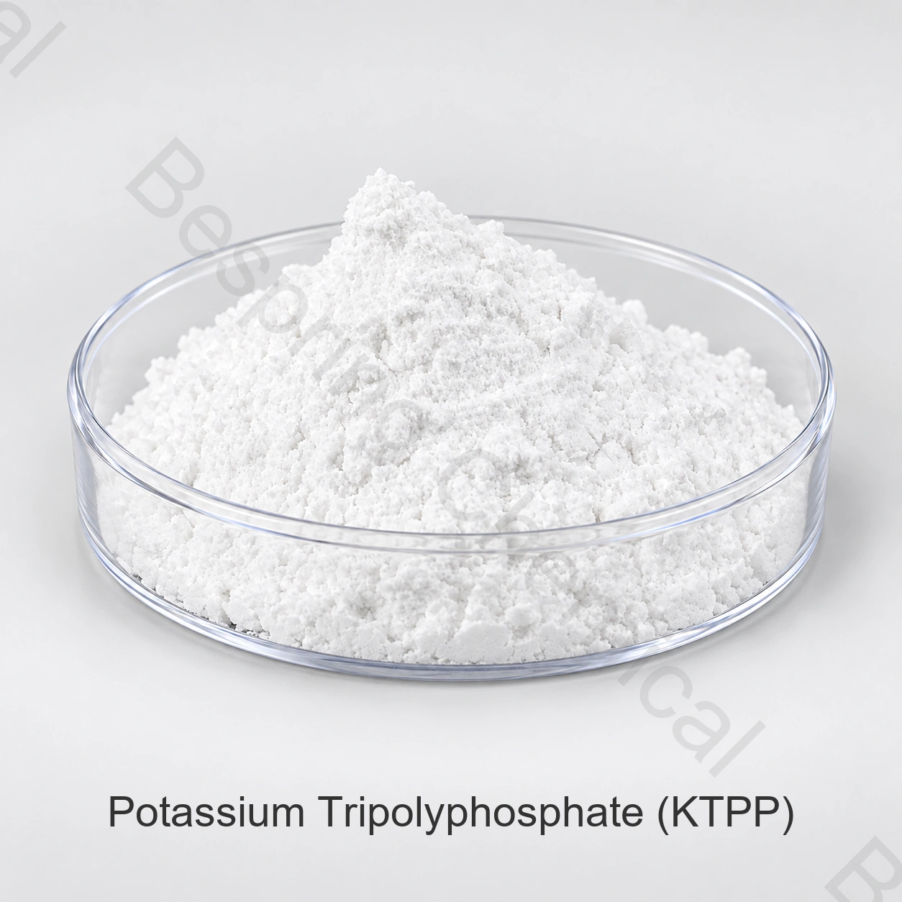

乳化・水管理
適切なタンパク質食品では、水結合と乳剤または完全なリン酸システムにおける結合性能を評価します。タンパク質と脂肪レベル、塩、追加シーケンス、混合、温度および最終pHを定義します。
- パージを測定し、制御に対する収量を調理
- エマルジョンの安定性と仕上げのテクスチャを評価
- 実際の水や塩水に溶解を検証する
食品等級の隣酸塩・カリウムの塩・CAS 13845-36-8
食品等級のカリウムのtripolyphosphate (KTPP)は、許可された食糧適用の質の、水管理および乳化塩システムのために評価されるカリウム ベースの凝縮させたリン酸塩です。 Bespringは国際B2Bの調達のための食品等級KTPPの粉を提供します。あなたの食糧塗布、必須の標準および宛先市場のための指定そして引用語句を要求します。

製品イメージ・注文時にグレード・パッケージの確認
仕様を重視した調達のため、食品カテゴリー、必要基準、重要限度、工程、数量および仕向地をお知らせください。
参照の試金K5P3O10 コンテンツ ≥90.0%
標準的なパッキング25キロの袋
容器のローディング参考: 22 MT/20' FCL
資格についてグレード固有の文書とCOAのバッチを要求する
製品概要
食品等級のカリウムのtripolyphosphate (KTPP)、またペタカリウムのトリップホスフェートと呼ばれる、トフリン酸のカリウムの塩です:CAS 13845-36-8の方式K5P3O10, INS 451(ii). ザ・ザ・ザ・ザ・ザ・ザ・ザ・ザ・ザ・ザ・ザ・ザ・ザ・ザ・ザ・ザ・ザ・ザ・ザ・ザ・ザ・ザ・ザ・ザ・ザ・ザ・ザ・ザ・ザ・ザ・ザ・ザ・ザ・ザ・ザ・ザ・ザ・ザ・ザ・ザ・ザ・ザ・ザ・ザ・ザ・ザ・ザ・ザ・ザ・ザ・ザ・ザ・ザ・ザ・ザ・ FAO/WHO JECFA アイデンティティレコード これらの名前と番号を識別します。式には結晶化の指定された水はありません。式重量は、公開されたJECFAモノグラフの448.42 g /molです。下の商用仕様は、KTPP含有≧90.0%で食品グレードの白色粉末をカバーしています。液体および工業用グレードは、別々の仕様を必要とします。
KTPPは異なる ナトリウムのtripolyphosphate (STPP) 引用語句に、そしてから テトラカリウムピロホスフェート(TKPP) リン酸構造で。 塩の変更は組成物を変更し、処方反応を変更することができます。 提供されるグレード、溶解およびプロセス試験を比較し、同等性物質を仮定する代わりに。
機能的役割
公表されたJECFAモノグラフは、テクスチャー関数をリストし、吸湿性、非常に水溶性材料を記述します。乳化、水分保持および散布は、追加の処方目標です。それらの適合性は、選択したグレード、食品システム、および処理条件によって異なります。
適切なタンパク質食品では、水結合と乳剤または完全なリン酸システムにおける結合性能を評価します。タンパク質と脂肪レベル、塩、追加シーケンス、混合、温度および最終pHを定義します。
選択した食品システムと一緒に金属イオン相互作用とpHを評価します。 水硬度、ミネラル負荷、その他の塩および加熱は、溶液の動作や試験結果に影響を与えることができます。
食品用途スクリーニング
仕向地市場で認められた用途を選び、想定する配合・加工条件で粉末を評価してください。
許可された肉または家禽システムのために、種、塩、塩水の温度および注入またはtumblingを定義して下さい。 パージ、調理された収穫、質および感覚的な質を制御と比較して下さい。 肉と家禽のリン酸塩の選択を見直して下さい.
適切な加工チーズまたは乳製品システムでは、完全な乳化塩酸塩システムの一部としてKTPPを評価します。タンパク質/ミネラルバランス、最終pH、熱およびせん断を定義します。油分離、溶融、粘度および風味を評価します。 酪農場のリン酸塩の公式のレビュー.
許可されたシーフードの処置のために、記録種、未加工/調理された/frozenの状態、処置の時間および水化学。排水された取入口、thawの滴り、調理された損失、出現および質を測定して下さい。 シーフードリン酸試験を計画する.
KTPP単独で比較し、宣言されている 食糧リン酸塩のブレンド 解散、pH、アプリケーション応答のため。必要なグループ制限計算ですべてのリン酸ソースを含める。
名前付き塩はナトリウムではなくカリウムが含まれています。 レシピ変更は、組成物のレビュー、感覚試験、およびナトリウムまたは栄養クレームを作る前に、適切な食品分析が必要です。
スケールアップ前の制御、受入基準、サンプリング計画を承認します。 レコードの混合、解散および温度/時間条件。 処理と保管中に品質を検証します。 普遍的な線量または保存性の利点は示されていません。
製品仕様
COAのバッチ結果とは、以下の商用参照制限が異なります。注文については、製品仕様の必須規格、分析方法、レポートベースに同意し、ロット固有のCOAを使用してバッチ受諾を使用します。引用されたJECFA仕様の重要な違いは、以下に説明されています。
小さな画面では、水平にスクロールします。 キーボードユーザーはテーブル領域に集中し、矢印キーを使うことができます。
スワイプするか、キーボードを使ってすべての列をご覧ください
| 試験項目 | ユニット | 商用参照 | 分析的な基礎/購入条件 |
|---|---|---|---|
| K5P3O10 コンテンツ | % | ≥90.0 | アッセイ方法とアスプレッションまたは乾燥方法を確認します。これは総リン結果ではありません。 |
| P2O5 コンテンツ | % | ≤46.0 | P₂O₅換算での表示です。分析方法と試料基準を確認してください。以下の比較をご覧ください。 |
| 水溶性物質 | % | ≤2.0 | ろ過、洗浄および乾燥方法を確認します。 |
| ヒ素（As） | % | ≤0.0003 | 等価な固有率限界:≤3 mg/kg。要求要素固有の結果および方法。 |
| 重金属（Pb換算） | % | ≤0.001 | 等価な総計の限界: Pb として ≤10 mg/kg; 別の鉛の結果無し。 |
| フッ化物(F) | % | ≤0.003 | 等価質量分限度: ≤30 mg/kg. 下記の比較を参照してください。. |
| カドミウム(Cd) | % | ≤0.0001 | 等価な固有率限界:≤1のmg/kg;レポートの限界を確認して下さい。 |
| Mercury (Hg) は、 | % | ≤0.0001 | 等価な固有率限界:≤1のmg/kg;レポートの限界を確認して下さい。 |
| pH値 | — | 9.5–10.5 | pH結果を比較するときの溶液濃度、テスト温度、水質を指定します。 |
| 105°Cの乾燥の損失 | % | ≤0.7 | 105°Cで乾燥時間を指定します。乾燥時の損失は点火の損失とは異なる。 |
| 外観 | — | 白色粉末 | 粒子サイズの分布と混合や処理に関連するバルク密度を要求します。 |
報告基礎: 上記の百分率からmg/kgへの表示は、掲載限度の単位換算であり実測ではありません。KTPP定量値、P₂O₅換算含量および元素リンは異なる表示量です。理論換算や別の試験で置き換えてはいけません。
ザ・ザ・ザ・ザ・ザ・ザ・ザ・ザ・ザ・ザ・ザ・ザ・ザ・ザ・ザ・ザ・ザ・ザ・ザ・ザ・ザ・ザ・ザ・ザ・ザ・ザ・ザ・ザ・ザ・ザ・ザ・ザ・ザ・ザ・ザ・ザ・ザ・ザ・ザ・ザ・ザ・ザ・ザ・ザ・ザ・ザ・ザ・ザ・ザ・ザ・ザ・ザ・ザ・ザ・ザ・ JECFAモノグラフ1仕様(2006コンパイル、金属修正2004) 乾燥物基準のKTPP含量≥85%、乾燥試料のP₂O₅ 46.5–48.0%、フッ化物≤10 mg/kgおよび鉛≤4 mg/kgを記載しています。上記商業限度はP₂O₅≤46.0%、フッ化物≤30 mg/kgで、個別鉛限度ではなく総重金属を示しています。含量基準を明示してください。これらの相違により、商業表だけではモノグラフへの適合を示せません。
同じ参考資料では、105°Cで4時間乾燥した後、550°Cで30分間強熱したときの強熱減量を≤0.4%としています。商業仕様の乾燥減量≤0.7%は別の試験です。pH範囲は1-in-100溶液で9.2–10.1であり、明確な溶液条件の下でのみ比較してください。JECFA仕様に基づく購入には、合意した版、対応する試験方法および元素別のバッチ結果が必要です。また、 FAOレコードと仕様リンク 他のエディションへのアクセスを提供します。購入に必要なエディションを指定します。
技術的な文書
グレード固有の仕様/ TDS、SDS、および代表者COAを要求します。 追加の分析方法、粒度データ、受諾に必要なバッチ結果を指定します。 利用可能な文書は、グレードと供給源によって異なります。
ご質問にHACCP、コーシャ、ハラール、ISOの文書の要件を明記してください。 文書のスコープと妥当性は、関連する製品および製造現場をカバーしなければなりません。
ザ・ザ・ザ・ザ・ザ・ザ・ザ・ザ・ザ・ザ・ザ・ザ・ザ・ザ・ザ・ザ・ザ・ザ・ザ・ザ・ザ・ザ・ザ・ザ・ザ・ザ・ザ・ザ・ザ・ザ・ザ・ザ・ザ・ザ・ザ・ザ・ザ・ザ・ザ・ザ・ザ・ザ・ザ・ザ・ザ・ザ・ザ・ザ・ザ・ザ・ザ・ザ・ザ・ザ・ザ・ Codex GSFAリン酸グループ INS 451(ii) を含む。 グループ規定とノートは、食品カテゴリによって異なります。注33は、リンパスとして関連する制限を表現しています。 特定の食品カテゴリ、総リン酸計算およびラベリングの市場規則を満たしている必要があります。
貯蔵および処理
バイヤーの質問
いいえ。KTPPは、カリウムトリポリリン酸塩(CAS 13845-36-8)です。 TKPPは、ナトリウムのトリップホスフェートである間、硫酸カリウムです。 組成と配合反応が異なるので、置換は検証済みのレシピが必要です。
これはKTPP含量の商業上の限度であり、バッチ試験結果ではありません。仕様書に分析方法と、供給状態基準か乾燥基準かを明記する必要があります。P₂O₅換算含量は別の分析項目です。
問い合わせに必要な版と分析要件を明示してください。上記の商業P₂O₅・フッ化物限度は引用JECFA仕様と異なり、追加の方法と個別鉛情報が必要です。適合には、合意した仕様と裏付けとなるバッチ結果が必要です。
目的地市場で許可されているアプリケーションを使用してください。 意図した水または塩水組成物、pH、追加シーケンス、混合、温度および時間に基づく候補の処方の制御を比較します。 溶解と関連するテクスチャ、パージ、乳剤または安定性の結果を測定します。
商業上の参考条件は25 kg袋、最小注文量500 kg、および20フィートコンテナ当たり22トンです。内袋、パレット配置、最終正味積載量および引渡条件は見積もりで定めます。
食品アプリケーション、製品規格、エディション、試金ベース、キー不純物制限、量、包装、宛先ポート、インコタームおよび配送要件を送信します。 仕様、COA、SDS、および必要な追加の文書をリストします。
関連のカリウムのリン酸塩
異なる構造とグレード固有の仕様でメタリン酸塩を比較します。 KTPPの自動交換ではありません。
異なるpHと処方ロールのオルソスフェートを比較します。特定のアプリケーションと食品標準を確認します。
選択された乳化、散布およびテクスチャシステムのためのdiphosphateを比較して下さい;独自の指定および調理法の応答を修飾して下さい。
また比較して下さい ナトリウムのトリップホスフェートの選択のための食品等級STPP または 食品リン酸塩ブレンドを組み合わせた機能で宣言. どちらのオプションも等しい置換を意味します。
仕様に基づく調達
提供食品グレードのKTPP仕様が受入条件から確認できるように、意図した食品とプロセスを教えてください。
あなたの等級および宛先市場を私達に知らせて下さい従って私達はあなたの順序のためにどの文書が利用できるか確認してもいいです。
外部参照は、バッチ証明書または Bespring 製品仕様ではありません。